vignettes/vanderPol.Rmd
vanderPol.RmdThe following example demonstrates how to simulate solutions to two coupled equations, and how to solve the Kolmogorov equations.
The case is stochastic van der Pol oscillator:
\[ dX_t = V_t ~dt , \quad dV_t = [ V_t(\mu-X_t^2) -X_t ]~dt + \sigma ~dB_t \]
## Loading required package: SDEtools
fx <- function(x,v) v
fv <- function(x,v) v*(mu - x^2)-x
gx <- function(x,v) 0
gv <- function(x,v) sigmaWe set this in the usual state space formalism, defining a state vector \(Z_t=(X_t,V_t)\). Then, the drift and noise in this vector equation for \(Z_t\) are:
We fix the parameters and simulate a sample path:
sigma <- 0.5
mu <- 1
T <- 100
dt <- 0.01
times <- seq(0,T,dt)
B <- rBM(times)
xv0 <- c(0,0)
sim <- euler(f,g,times,xv0,B)
plot(times,sim$X[,1],type="l",xlab="Time t",ylab="Position X")We can plot the solution in the phase plane:
plot(sim$X[,1],sim$X[,2],type="l",xlab="Position X",ylab="Velocity V")We can also compute the stationary distribution analytically. To this end, we first define a grid.
xmax <- 1.5*max(abs(sim$X[,1]))
vmax <- 1.5*max(abs(sim$X[,2]))
xgrid <- seq(-xmax,xmax,length=101)
vgrid <- seq(-vmax,vmax,length=91)
xc <- cell.centers(xgrid)
vc <- cell.centers(vgrid)
plot(xmax*c(-1,1),vmax*c(-1,1),type="n",xlab="x",ylab="v")
abline(h=vgrid)
abline(v=xgrid)We next pose the advection/diffusion form of the Kolmogorov equations. Note that the advective field equals the drift, since the noise intensity is state independent. We discretize the equation using the function fvade2d, which by default uses reflection at the boundaries.
Dx <- function(x,v) 0
Dv <- function(x,v) 0.5*gv(x,v)^2
G <- fvade2d(fx,fv,Dx,Dv,xgrid,vgrid)## Loading required package: MatrixWe can now compute the stationary distribution. At first, this gives just a vector, so it must be transformed to a field
pi <- unpack.field(StationaryDistribution(G),length(xc),length(vc))
image(xc,vc,t(prob2pdf(pi,xgrid,vgrid)))
To compare this with the simulation, it is better to plot the time series as points in the phase plane:
plot(sim$X[,1],sim$X[,2],pch=".",xlab="x",ylab="v")